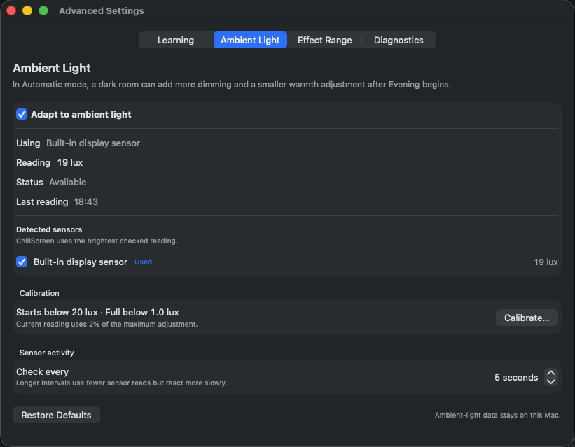
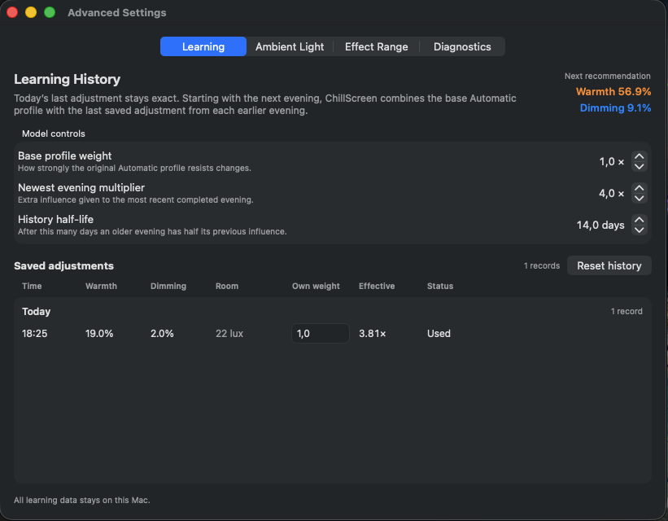

Automatic
Uses your schedule and optional local sunrise and sunset.
A daily cycle for your display
The ChillScreen app gradually adjusts warmth and dimming around your schedule, local sunlight, and the light in your room — without accounts, in-app analytics, or screen capture.
Use it entirely automatically without ever opening a settings menu, teach it your rhythm and preferences, or explore the detailed controls when you want to go deeper.
Free for personal use, nonprofit organizations, and government educational organizations.
Version 1.1.0 · macOS 14 Sonoma or later · every feature available
See sunlight, your routine, reference circadian rhythms, and screen adjustments on one shared timeline. The interactive model below explains the idea; the actual macOS interface continues to develop.
Drag the timeline markers and curve handles to explore. This browser preview changes only the illustration; it does not alter your display.
Useful, but optional
Ambient Light shows the sensor readings it uses and lets you calibrate how much they can influence the screen.
Learning keeps a local history you can inspect, undo, tune, or reset.
Uses your schedule and optional local sunrise and sunset.
Can respond to the room using thresholds you calibrate yourself.
Uses your evening adjustments to shape future Automatic evenings.
Keeps direct control close whenever you want it.


“I've had some trouble with sleep for a long time, and one thing I wanted to control better was my exposure to bright and blue light in the evening.”Read why ChillScreen exists
Private by default
Every feature remains available. After two weeks you may choose what ChillScreen is worth to you — including €0.